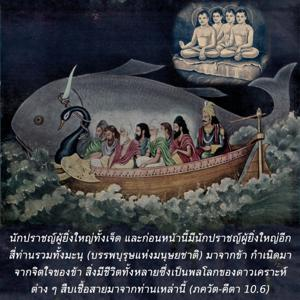

นักปราชญ์ผู้ยิ่งใหญ่ทั้งเจ็ด และก่อนหน้านี้มีนักปราชญ์ผู้ยิ่งใหญ่อีกสี่ท่าน รวมทั้ง มนุ (บรรพบุรุษแห่งมนุษยชาติ) มาจากข้า กำเนิดมาจากจิตใจของข้า สิ่งมีชีวิตทั้งหลายซึ่งเป็นพลโลกของดาวเคราะห์ต่างๆสืบเชื้อสายมาจากท่านเหล่านี้

องค์ภควานฺทรงให้ข้อสรุปเกี่ยวกับเรื่องวงศ์วานของประชากรในจักรวาล พระพรหมทรงเป็นชีวิตแรกที่ประสูติจากพลังงานของพระองค์ทรงพระนามว่า หิรณฺยครฺภ จากพระพรหมนักปราชญ์ผู้ยิ่งใหญ่ทั้งเจ็ด ก่อนหน้านี้มีนักปราชญ์ผู้ยิ่งใหญ่สี่ท่าน คือ สนก, สนนฺท, สนาตน และ สนตฺ - กุมาร จากนั้น มนุ-สํหิตา ทรงปรากฏออกมา นักปราชญ์ผู้ยิ่งใหญ่ทั้งยี่สิบห้าท่านนี้เป็นผู้อาวุโสสูงสุดของมวลชีวิตในจักรวาลทั้งหมด มีจักรวาลอยู่นับไม่ถ้วน และมีดาวเคราะห์ที่นับไม่ถ้วนอยู่ภายในแต่ละจักรวาล แต่ละดาวเคราะห์ยังเต็มไปด้วยประชากรอันหลากหลายเผ่าพันธุ์ทั้งหมดเกิดมาจากผู้อาวุโสสูงสุดยี่สิบห้าท่านนี้ พระพรหมทรงปฏิบัติการบำเพ็ญเพียงเป็นเวลาหนึ่งพันปีตามเวลาของเทวดาก่อนที่จะรู้แจ้งด้วยพระกรุณาธิคุณขององค์กฺฤษฺณว่าจะทำการสร้างอย่างไร จากพระพรหม สนก, สนนฺท, สนาตน และ สนตฺ-กุมาร ประสูติออกมา จากนั้น รุทฺร และนักปราชญ์ทั้งเจ็ด เช่นนี้ พฺราหฺมณ และ กฺษตฺริย ทั้งหลายเกิดมาจากพลังงานขององค์ภควานฺ พระพรหมทรงพระนามว่า ปิตามห หรือเสด็จปู่ และองค์กฺฤษฺณทรงพระนามว่า พระ ปิตามห พระบิดาของเสด็จปู่ซึ่งได้กล่าวไว้ในบทที่สิบเอ็ดของ ภควัท-คีตา (11.39)